GeoServer Guide¶
Creating Your Instance¶
Note: For installation instructions, refer to GeoServer Installation Guide.
Using the Kartoza GeoSpatialHosting Dashboard¶
After your service has finished setting up, you will be redirected to the Hosted Services page of the GeoSpatial Hosting Dashboard. Here, you can view all your purchased services.
To access your login credentials:
- Click the Get Credentials button under your hosted service.
- Your credentials will be copied to your clipboard.
Hint: Paste and save your credentials in a secure location.
- Click the application name you selected for your GeoServer instance to open it.
First Log In & Setting Your Password¶
Logging In¶
To modify server settings or configure spatial data in GeoServer, you must first log in using the administrator credentials.
- Navigate to the top-right corner of the web interface.
- Click the Login button.
- Enter the credentials you generated earlier from the GeoSpatialHosting Dashboard:
- Username:
admin - Password:
GeoServer_Admin_Password
Hint: Need help finding your credentials? See the section: Using the Kartoza GeoSpatialHosting Dashboard Note: You can change login details later under the Security section of the GeoServer documentation.
Once logged in, the Welcome screen expands to show administrative functions — primarily accessible through the navigation menu on the left.
Quickstart: 5-Minute Tutorial¶
Publishing a Layer¶
This tutorial guides you through the steps to publish a layer using GeoServer.
Note: This tutorial assumes GeoServer is running at
http://<application_name>.sta.do.kartoza.com/geoserver.
Data Preparation¶
Before publishing data in GeoServer, we need to gather and prepare a few shapefiles. In this tutorial, we’ll use four small-scale 1:110m datasets from Natural Earth.
-
Download Datasets
Click the links below to download the .zip archives containing the shapefiles:
-
Organize Files
After downloading, unzip each file and move the extracted files into a single folder called:
NaturalEarthHint: Keep your folder structure tidy — it’ll help later when uploading or referencing your data in GeoServer.
Adding data to your File Browser¶
In order for the data to be accessible in the Web Administration Interface, it first needs to be added to your File Browser.
To add data:
-
Open the file browser at:
-
Log in using the credentials you retrieved from the GeoSpatialHosting Dashboard:
- Username:
admin - Password:
FB_Password_Unhashed
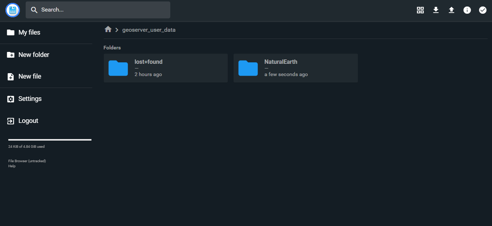Image credit: GeoServerHint: Need help finding your credentials? See the section: Using the Kartoza GeoSpatialHosting Dashboard
- Username:
-
Double-click the
geoserver_user_datafolder to enter it. -
Click the Upload button at the top-right of the screen. When prompted, select Folder.
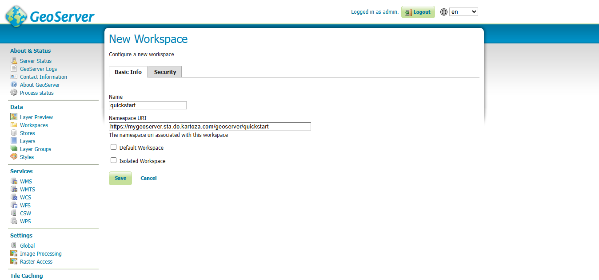Image credit: GeoServer -
Locate and upload the
NaturalEarthfolder you previously prepared.
The data will now be accessible in the Web Administration Interface.
Creating a New Workspace¶
The next step is to create a workspace for your layers. A workspace is essentially a container used to organize and group related layers within GeoServer.
Note This step is optional if you prefer to use an existing workspace. Typically, a new workspace is created for each project, allowing you to group related stores and layers together.
-
Open a web browser and navigate to:
-
Log in to GeoServer using your credentials.
-
In the left-hand menu, go to Data → Workspaces.
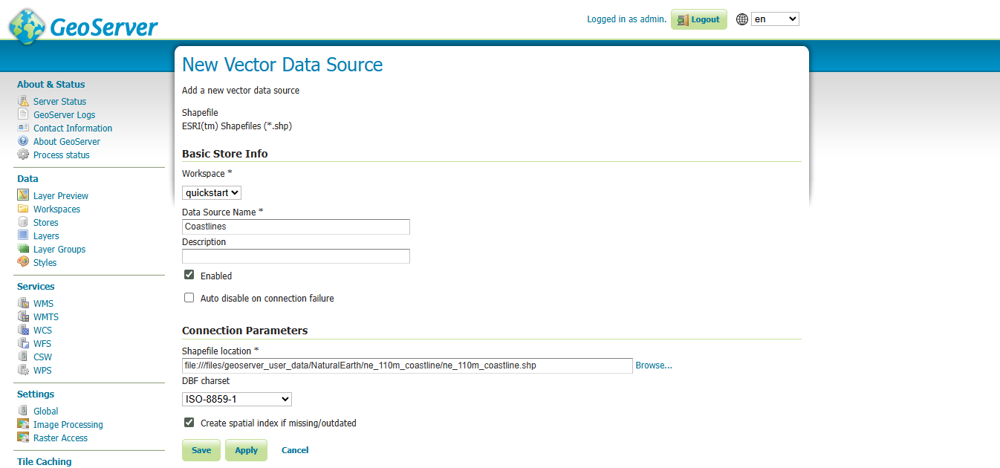Image credit: GeoServer -
Click the Add new workspace button to open the New Workspace page.
-
Complete the form with the following details:
Field Value Name tutorialNamespace URI http://<application_name>.sta.do.kartoza.com/geoserver/tutorialNote: The workspace name should describe your project. It must be 10 characters or fewer and cannot contain spaces. The Namespace URI can be any URL-like string tied to your project. It typically includes a trailing identifier that reflects the workspace. This URI does not need to resolve to a real web address.
-
Click the Save button.
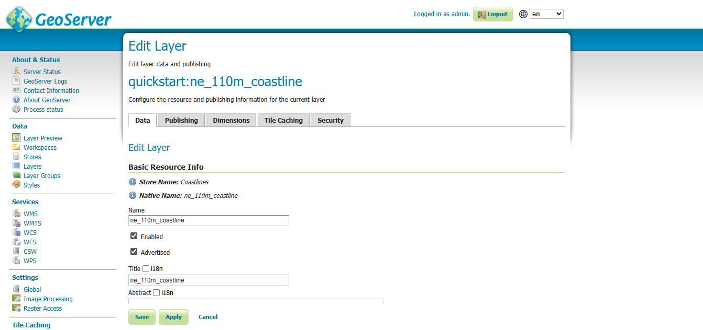Image credit: GeoServer -
The
tutorialworkspace should now appear in the Workspaces list.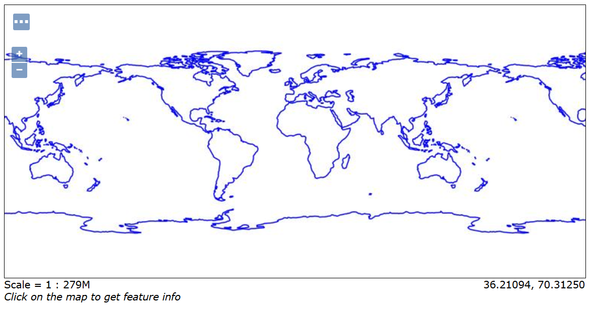Image credit: GeoServer
Note: For more information, see the full Workspaces documentation.
Creating a Store¶
Once the workspace is set up, the next step is to add a new store. A store tells GeoServer how to connect to the data.
-
Navigate to Data → Stores.
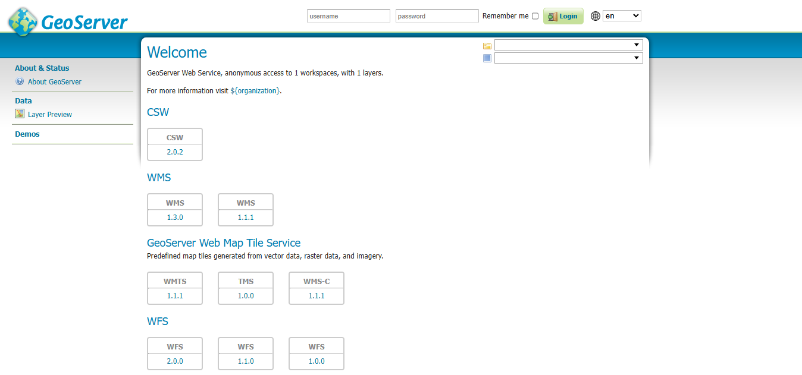Image credit: GeoServer -
To add the layer, click the Add new Store button. This will take you to a list of data sources supported by GeoServer.
Note: Keep in mind that this list is extensible, so yours might look slightly different.
-
From the list of Vector Data Sources, find and click the Shapefile option.
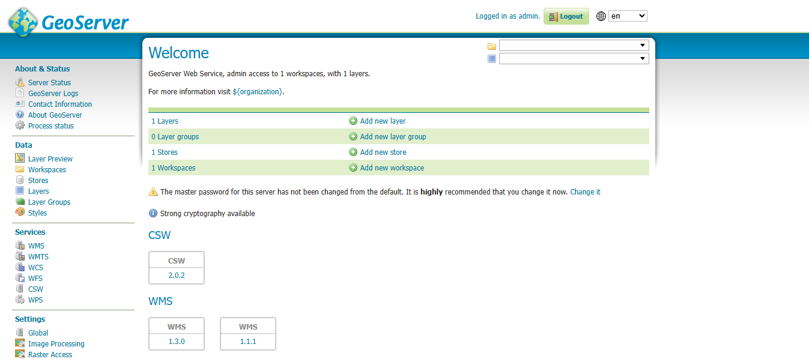Image credit: GeoServer -
Fill in the following fields:
Field Value Workspace tutorialData Source Name Natural Earth - CoastlinesDescription Shapefile of Natural Earth Coastlines data -
Under Shapefile location, enter the following:
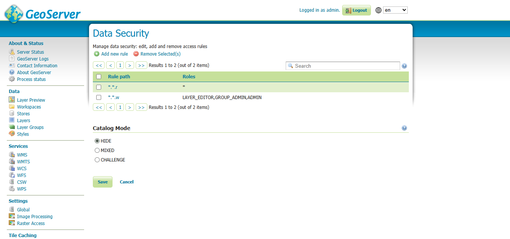Image credit: GeoServer -
Press Save. You will be redirected to the New Layer page.
Note: For more information, see the full Stores documentation.
Creating a Layer¶
Now that we've connected to the store, we can proceed to publish a layer.
-
In the New Layer page, click Publish next to the
ne_110_coastlinelayer name.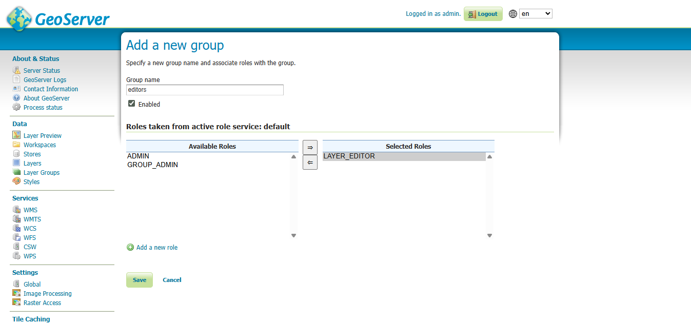Image credit: GeoServer -
The Edit Layer page defines the data and publishing parameters for the layer.
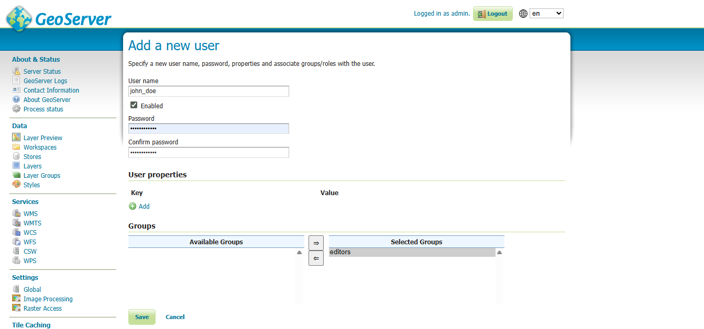Image credit: GeoServer -
Three key sections on the Data tab must be completed before saving:
- Basic Resource Info – defines how the layer is presented
- Coordinate Reference System – determines how spatial data is interpreted
- Bounding Boxes – establishes the dataset's geographic extent
-
In the Basic Resource Info section, enter the following:
Field Value Name CoastlineTitle CoastlineNote: While GeoServer allows flexible naming, many external protocols require simple, standard layer names.
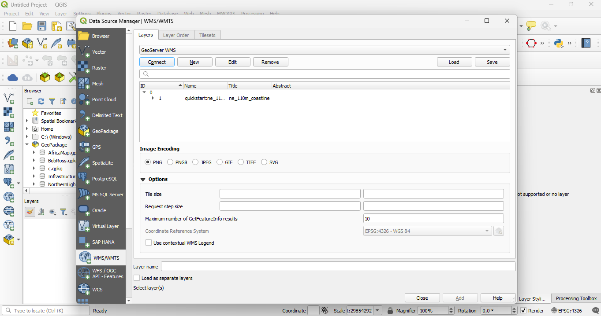Image credit: GeoServer -
Verify that the Coordinate Reference System (CRS) information is accurate:
Field Value Native SRS EPSG:4326 Declaired SRS EPSG:4326 SRS Handling Force declared 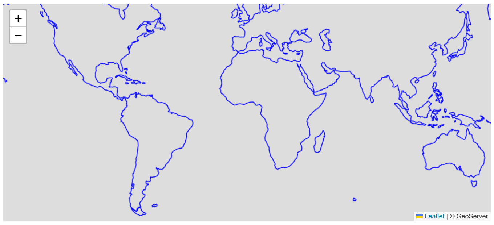Image credit: GeoServer -
In the Bounding Boxes section, click Compute from data, then Compute from native bounds to auto-fill the bounding box fields.
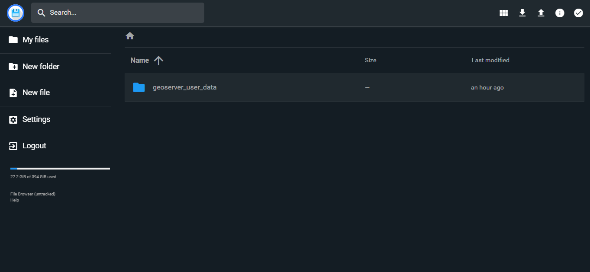Image credit: GeoServer -
Click Apply to save your progress without closing the page.
Hint: This is useful to confirm that all required fields are correctly filled; GeoServer will show a warning if anything is missing.
-
Scroll to the top and go to the Publishing tab.
-
Under WMS Settings, set the Default Style to
line.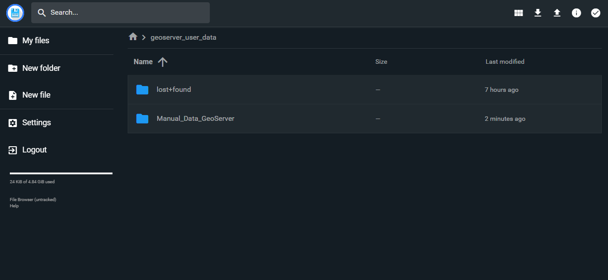Image credit: GeoServer -
Click Save to finalize the layer configuration and publish the layer.
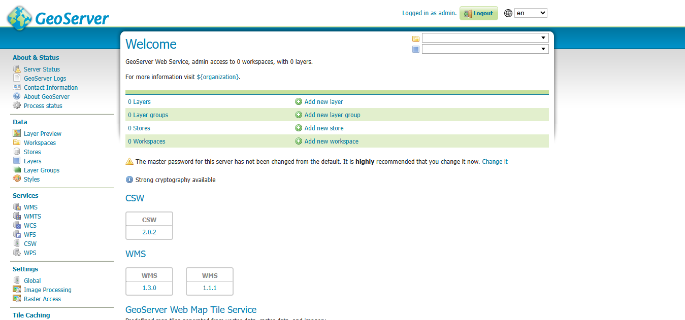Image credit: GeoServer
Note: For more information, see the full Layers documentation.
Previewing the layer¶
To confirm that the tutorial:Coastline layer has been published successfully, we can preview it in GeoServer.
-
Go to Data → Layer Preview and locate the
tutorial:Coastlinelayer.Image credit: GeoServerNote: To filter results and make it easier to find, type
tutorialin the search field. -
Click the OpenLayers link in the Common Formats column.
-
An OpenLayers map will open in a new tab, displaying the shapefile data with the default line style.
-
You can interact with the preview map by zooming, panning, and clicking on features to view their attribute data.
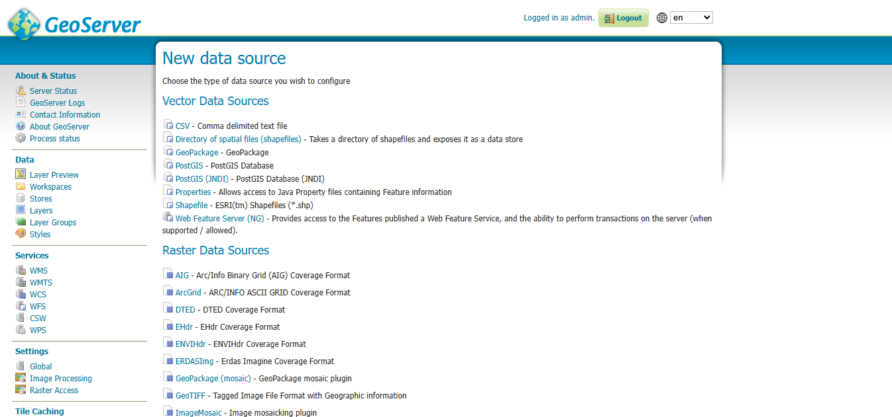Image credit: GeoServer
Note: For more information, see the full Layer Preview documentation.
Try it Yourself¶
Now that you've published a layer, try doing the same with the Countries layer.
You've already added it to your File Browser and created the tutorial workspace, so you can skip those steps. All that's left is to:
- Set up a new data store for the
CountriesShapefile. - Publish the
Countrieslayer. - Preview your published layer
Publishing a Layer Group¶
Note: This tutorial assumes GeoServer is accessible at
http://<application_name>.sta.do.kartoza.com/geoserver.
Data preparation¶
Before we can publish a layer group, we need to ensure the required data is available.
Complete the following previous tutorials to prepare the necessary layers:
-
Publishing a Layer — defines the
tutorial:Coastlinelayer. -
Publishing an Image — defines the
tutorial_image:shadedlayer.
Creating a layer group¶
Now that we have the necessary layers published, we can group them together into a single map view using a layer group.
-
Navigate to the Data → Layer Groups page.
 Image credit: GeoServer
Image credit: GeoServer -
This page displays a list of existing layer groups along with the workspace each belongs to.
Note: Layer groups can be global, allowing you to combine layers from multiple workspaces into one visual representation.
-
At the top of the Layer Groups list, click Add new layer group to open the Layer Group editor.
 Image credit: GeoServer
Image credit: GeoServer -
The Layer Group editor includes the following sections:
- Basic Resource Info – defines how the layer group is presented externally
- Coordinate Reference System – determines how the data is geospatially projected
- Bounding Boxes – indicates the spatial extent of the group
- Layers – lists the individual layers included, in the order they are drawn
-
In the Basic Resource Info section, enter the following:
Field Value Name basemapTitle BasemapAbstract Plain basemap suitable as a backdrop for geospatial data.Workspace tutorial Image credit: GeoServer
Image credit: GeoServer -
Scroll down to the Layers list, which will initially be empty.
 Image credit: GeoServer
Image credit: GeoServer -
Click Add Layer, and select the
tutorial_image:shadedlayer first. The raster should be drawn first, as other content will be shown over top of it. -
Click Add Layer again, and select the
tutorial:Coastlinelayer. This polygon layer will be rendered on top of the shaded relief. -
In the layer list, find the
tutorial:Coastlineentry, and click on its Style field. Make sure its set toline. This ensures only the outlines are drawn, allowing the shaded relief underneath to remain visible. Image credit: GeoServer
Image credit: GeoServer -
Scroll to Coordinate Reference System, and click Generate Bounds. Now that the layers are listed, GeoServer can determine the spatial extent and reference system automatically.
 Image credit: GeoServer
Image credit: GeoServer -
Click Save to finish creating your layer group.
 Image credit: GeoServer
Image credit: GeoServer
Note: For more information, see the full Layer Groups documentation.
Publishing a style¶
This tutorial walks through the steps of defining a style and associating it with a layer for use.
Note: This tutorial assumes GeoServer is accessible at
http://<application_name>.sta.do.kartoza.com/geoserver.
Data Preparation For Style¶
Before we can create a style, we need to ensure the required data is available.
Complete the following previous section to prepare the necessary layer:
- Publishing a Layer: Try it Yourself — defines the
tutorial:Countrieslayer.
Creating a style¶
-
Navigate to Data → Style page.
 Image credit: GeoServer
Image credit: GeoServer -
This page lists existing styles, along with their associated workspaces.
Note: Styles can be global, which means they can be defined once and applied to layers across different workspaces.
-
At the top of the Styles list, click the Add a new style link.
-
Under Style Data, complete the form with the following details:
Field Value Name backgroundWorkspace tutorialFormat SLD Image credit: GeoServer
Image credit: GeoServer -
Next, locate Style Content and under Generate a default style, select
Polygon. Image credit: GeoServer
Image credit: GeoServer -
Click the Generate link to automatically populate the style editor with a basic polygon style outline.
 Image credit: GeoServer
Image credit: GeoServer -
Press Apply to save and define this style. Once saved, additional interactive editing options will become available.
-
Scroll to the top and go to the Publishing tab.
-
Use the search field to filter by
tutorialand locate thetutorial:countrieslayer. -
Check the Default checkbox next to
tutorial:countriesto set thetutorial:backgroundstyle as the default for this layer. Image credit: GeoServer
Image credit: GeoServer -
Go to the Layer Preview tab. Under Preview on layer, click the link for
tutorial:countriesto use this dataset while editing the style. Image credit: GeoServer
Image credit: GeoServer -
Edit your style by inserting a
fill-opacityvalue of0.25to make the fill semi-transparent.<?xml version="1.0" encoding="ISO-8859-1"?> <StyledLayerDescriptor version="1.0.0" xsi:schemaLocation="http://www.opengis.net/sld http://schemas.opengis.net/sld/1.0.0/StyledLayerDescriptor.xsd" xmlns="http://www.opengis.net/sld" xmlns:ogc="http://www.opengis.net/ogc" xmlns:xlink="http://www.w3.org/1999/xlink" xmlns:xsi="http://www.w3.org/2001/XMLSchema-instance"> <NamedLayer> <Name>background</Name> <UserStyle> <Title>Background</Title> <FeatureTypeStyle> <Rule> <Title>Background</Title> <PolygonSymbolizer> <Fill> <CssParameter name="fill">#444433</CssParameter> <CssParameter name="fill-opacity">0.25</CssParameter> </Fill> <Stroke> <CssParameter name="stroke">#000000</CssParameter> <CssParameter name="stroke-width">0.25</CssParameter> </Stroke> </PolygonSymbolizer> </Rule> </FeatureTypeStyle> </UserStyle> </NamedLayer> </StyledLayerDescriptor> -
Press Apply to update the style and observe the visual change in the layer preview.
 Image credit: GeoServer
Image credit: GeoServer
You have now succesfully defined a style and associating it with a layer.
Note: For more information, see the full Styles documentation.
Navigating the Dashboard¶
Hosted Services Page¶
After your service has finished setting up, you will be redirected to the Hosted Services page of the GeoSpatial Hosting Dashboard. Here, you can view all your purchased services.
Accessing Your Credentials¶
To access your login credentials:
- Click the Get Credentials button under your hosted service.
- Your credentials will be copied to your clipboard.
Hint: Paste and save your credentials in a secure location.
- Click the application name you selected for your GeoServer instance to open it.
Deleting a Hosted Service¶
To delete a hosted service:
- Click the 3 dots in the corner of the hosted service pane.
- From the dropdown menu, select Delete.
⚠️ IMPORTANT Deleting a hosted service is permanent. All associated data will be irreversibly removed with no option for recovery.
Managing Users & Permissions¶
Integrating With Other Tools¶
GeoServer’s OGC services (WMS, WFS, WCS) can be consumed by desktop GIS clients, web mapping libraries, and other applications. Below are two common examples.
Consuming GeoServer WMS in QGIS¶
- Open QGIS and go to Layer → Add Layer → Add WMS/WMTS Layer…
- Click New, then enter:
- Name:
GeoServer WMS -
URL:
-
Click OK, then Connect.
- From the list, select
tutorial:Coastline(and any others), then click Add. - Your GeoServer layer will appear in the QGIS map canvas.

Embedding GeoServer WMS in a Leaflet Map¶
- Include Leaflet’s CSS and JS in your HTML
<head>:
<link rel="stylesheet" href="https://unpkg.com/leaflet/dist/leaflet.css"/>
<script src="https://unpkg.com/leaflet/dist/leaflet.js"></script>
-
In your
<body>, add a<div id="map" style="height: 400px;"></div> -
Initialize the map and add the WMS layer:
<script>
const map = L.map('map').setView([0, 0], 2);
L.tileLayer.wms('http://<application_name>.sta.do.kartoza.com/geoserver/ows', {
layers: 'tutorial:Coastline',
format: 'image/png',
transparent: true,
attribution: '© GeoServer'
}).addTo(map);
</script>
-
Open your HTML file in a browser to see the GeoServer layer displayed via Leaflet.
Glossary of Terms¶
-
Workspace A container in GeoServer used to group related stores and layers. Often named for a project.
-
Store Defines how GeoServer connects to your data (shapefiles, PostGIS, GeoTIFF, etc.).
-
Layer A published dataset in GeoServer, exposed via OGC services (WMS/WFS/WCS).
-
Layer Group A set of layers combined into a single map view, with a defined drawing order and styles.
-
Style An SLD or CSS file that defines how features are rendered (colors, symbols, opacity).
-
SRS / CRS Spatial Reference System (Coordinate Reference System) that defines how coordinates map to locations on Earth (e.g., EPSG:4326).
-
WMS (Web Map Service) An OGC service for rendering map images from layers.
-
WFS (Web Feature Service) An OGC service for retrieving vector features (e.g., GeoJSON, GML).
-
WCS (Web Coverage Service) An OGC service for retrieving raster data as coverages.
-
GetCapabilities A request that returns an XML document describing available services, layers, and operations.
-
GetMap A WMS request that returns a map image for specified layers, bounding box, and format.
Note: For installation instructions, refer to GeoServer Installation Guide.
For more information you can visit Geoserver Official Docs